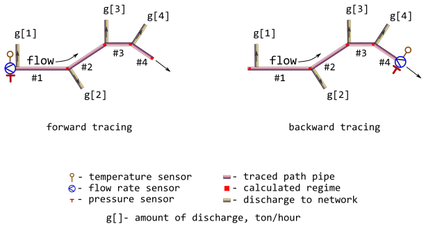

Trace thermal-hydraulic regime for linear segment of district heating network
Source:R/traceline.R
traceline.RdTrace values of thermal-hydraulic regime (temperature, pressure, flow_rate, and other) along the adjacent linear segments of pipeline using user-provided values of specific heat loss power.
Arguments
- temperature
Traced thermal hydraulic regime. Sensor-measured temperature of heat carrier (water) inside the pipe sensor-measured at the inlet (forward tracing) or at the outlet (backward tracing) of path, [°C]. Type:
assert_number.- pressure
Traced thermal hydraulic regime. Sensor-measured absolute pressure of heat carrier (water) sensor-measured at the inlet (forward tracing) or at the outlet (backward tracing) of path, [MPa]. Type:
assert_number.- flow_rate
Traced thermal hydraulic regime. Amount of heat carrier (water) sensor-measured at the inlet (forward tracing) or at the outlet (backward tracing) of path, [ton/h]. Type:
assert_number.- g
amount of heat carrier discharge to network for each pipe segment in the tracing path enumerated along the direction of flow. If flag
absgisTRUEthen they treat argumentgas absolute value in [ton/h], otherwise they do as percentage of flow_rate in the pipe segment. Type:assert_double.- d
outside diameters of subsequent pipes in tracing path that are enumerated along the direction of flow, [mm]. Type:
assert_double.- wth
wall thickness of pipe, [mm]. Type:
assert_double.- len
length of subsequent pipes in tracing path that are enumerated along the direction of flow, [m]. Type:
assert_double.- loss
user-provided value of specific heat loss power for each pipe in tracing path enumerated along the direction of flow, [kcal/m/h]. Values of the argument can be obtained experimentally, or taken from regulatory documents. Type:
assert_double.- roughness
roughness of internal wall for each pipe in tracing path enumerated along the direction of flow, [m]. Type:
assert_double.- inlet
elevation of pipe inlet for each pipe in tracing path enumerated along the direction of flow, [m]. Type:
assert_double.- outlet
elevation of pipe outlet for each pipe in tracing path enumerated along the direction of flow, [m]. Type:
assert_double.- elev_tol
maximum allowed discrepancy between adjacent outlet and inlet elevations of two subsequent pipes in the traced path, [m]. Type:
assert_number.- method
method of determining Darcy friction factor
romeovatankhahbuzzelli
Type:
assert_choice. For more details seedropp.- forward
tracing direction flag: is it a forward direction of tracing? If
FALSEthe backward tracing is performed. Type:assert_flag.- absg
Whether argument
g(amount of heat carrier discharge to network) is an absolute value in [ton/h] (TRUE) or is it a percentage of flow rate in the pipe segment (FALSE)? Type:assert_flag.
Value
list containing results (detailed log) of tracing for each
pipe in tracing path enumerated along the direction of flow:
temperatureTraced thermal hydraulic regime. Traced temperature of heat carrier (water), [°C]. Type:
assert_double.pressureTraced thermal hydraulic regime. Traced pressure of heat carrier (water) for each pipe in tracing path enumerated along the direction of flow, [MPa]. Type:
assert_double.flow_rateTraced thermal hydraulic regime. Traced flow rate of heat carrier (water) for each pipe in tracing path enumerated along the direction of flow, [ton/h]. Type:
assert_double.lossUser-provided specific heat loss power for each pipe in tracing path enumerated along the direction of flow, [kcal/m/h], - copy of input. Type:
assert_double.fluxHeat flux for each pipe in tracing path enumerated along the direction of flow, [W/m²]. Type:
assert_double.QHeat loss for each pipe in tracing path enumerated along the direction of flow per day, [kcal]. Type:
assert_double.
Type: assert_list.
Details
They consider only simple tracing paths which do not contain rings and any kind of parallelization. At the same time bidirectional (forward and backward) tracing is possible in accordance with sensor position. They also may consider discharges to network at the inlet of each pipeline segment as an approximation of actual forks of flows. Relevant illustration of adopted assumptions for 4-segment tracing path is depicted on the next figure.

They make additional check for consistency of inlet and outlet
values for subsequent pipe segments. Discrepancy of appropriate elevations
cannot be more than elev_tol.
Since inner diameter of the pipe is used as input, the the thickness of the pipe wall additionally considered in heat flux calculations. Pipe wall thickness is derived from pipe diameter using GOST 30732 specifications.
See also
Other Regime tracing:
dropg(),
dropp(),
dropt(),
m325tracebw(),
m325tracefw(),
m325traceline(),
tracebw(),
tracefw()
Examples
library(pipenostics)
# Consider 4-segment tracing path.
# First, let sensor readings for forward tracing:
t_fw <- 130 # [°C]
p_fw <- mpa_kgf(6) # [MPa]
g_fw <- 250 # [ton/h]
# Let discharges to network for each pipeline segment are somehow determined
# as
discharges <- seq(0, 30, 10) # [ton/h]
# Experimentally obtained values of specific heat loss power are
actual_loss <- c(348.0000, 347.1389, 346.3483, 345.8610) # [kcal/m/h]
# Then the calculated regime (red squares) for forward tracing is
traceline(
t_fw, p_fw, g_fw, discharges, loss = actual_loss, forward = TRUE
)
#> $temperature
#> [1] 129.1799 128.4269 127.9628 127.3367
#>
#> $pressure
#> [1] 0.5878440 0.5873924 0.5871776 0.5869907
#>
#> $flow_rate
#> [1] 250 240 220 190
#>
#> $loss
#> [1] 348.0000 347.1389 346.3483 345.8610
#>
#> $flux
#> [1] 178.9273 178.4845 178.0781 177.8275
#>
#> $Q
#> [1] 5011200 4415607 2493708 2905232
#>
# Next consider values of traced regime as sensor readings for backward
# tracing:
t_bw <- 127.3367 # [°C]
p_bw <- .5870330 # [MPa]
g_bw <- 190 # [ton/h]
# Then the calculated regime (red squares) for backward tracing is
regime_bw <- traceline(
t_bw, p_bw, g_bw, discharges, loss = actual_loss, forward = FALSE
)
print(regime_bw)
#> $temperature
#> [1] 130.0009 129.1805 128.4272 127.9630
#>
#> $pressure
#> [1] 0.5884422 0.5878867 0.5874348 0.5872200
#>
#> $flow_rate
#> [1] 250 250 240 220
#>
#> $loss
#> [1] 348.0000 347.1389 346.3483 345.8610
#>
#> $flux
#> [1] 178.9273 178.4845 178.0781 177.8275
#>
#> $Q
#> [1] 5011200 4415607 2493708 2905232
#>
# Let compare sensor readings with backward tracing results:
with(regime_bw, {
lambda <- function(val, constraint)
c(val, constraint, constraint - val,
abs(constraint - val) * 100/constraint)
first <- 1
structure(
rbind(
lambda(temperature[first], t_fw),
lambda(pressure[first], p_fw),
lambda(flow_rate[first], g_fw)
),
dimnames = list(
c("temperature", "pressure", "flow_rate"),
c("sensor.value", "traced.value", "abs.discr", "rel.discr")
)
)
})
#> sensor.value traced.value abs.discr rel.discr
#> temperature 130.0008937 130.000000 -8.937061e-04 0.0006874662
#> pressure 0.5884422 0.588399 -4.316196e-05 0.0073354909
#> flow_rate 250.0000000 250.000000 0.000000e+00 0.0000000000